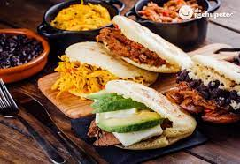

<!DOCTYPE html> 
<html lang="en"></html>

<head>
    <meta charset="UTF-8">
    <title>
Arepas
    </title>
    
</head>

<body>    

    <h1> </h1>
 

    <p><em>Arepa</em> is derived from the indigenous term Erepa, which means corn. Arepa is a corn griddle cake made from pre-cooked cornmeal, it is popular in Colombia and Venezuela, where it is served daily with a variety of toppings to complement them. They were traditionally prepared in a pan known as a budare. However, they can be grilled, fried, or baked as well.</p>
    <p>You will only need 3 ingredients:</p>
    <u>
        <li>Water</li>
        <li>Harina Pan</li>
        <li>Salt</li>
    </u>
<p>Now the instruccions are very simple, follow here</p>

<ol>
<li> If the corners crack easily or the dough feels too dry, moisten with a little additional water. Moist arepas can be made by adding a little <em>oil</em> to the dough.</li>
<li>By shaping a bit of the dough to verify its consistency before adding extra water, you can avoid dense and gummy arepas.</li>
<li>You will need a nonstick griddle or skillet for this recipe. If you do not have one, you can use a cast-iron skillet and lightly grease it before cooking each arepa.</li>
<li>Use a knife to cut arepas down the center but leave the back ends attached and stuff your favorite stuffing.</li>
<li>Before stuffing an arepa, it is common to smear butter inside. It is completely optional, but it is highly suggested.</li>


</ol>

    <p>You can also watch <a href="https://www.youtube.com/watch?v=YRmc06zxons&ab_channel=%E2%80%A2JuanPedroCocina%E2%80%A2"> this video</a> if you want to follow this recipe. Enjoy</p>


    
</body>

</html>